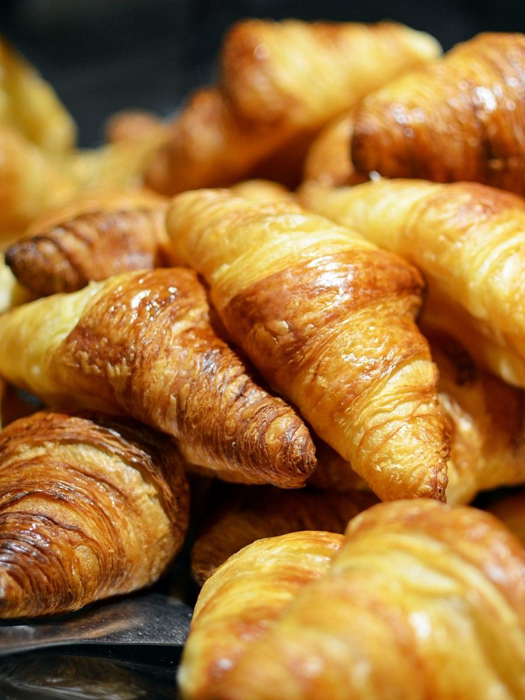

Menu
メニュー
品目・価格・提供日などは準備中です。下の写真は、パンや焼き菓子のお店から思い浮かべた参考のイメージで、実際の商品ではありません。
| 品目 | 準備中 |
|---|---|
| 価格 | 準備中 |
| 営業時間 | 準備中 |
| ご予約 | 準備中 |
イメージ
粉から、焼き上がりまで
一
撮影地不明のイメージ
まずは粉。
二
国外のイメージ(米国)
丸く焼けた表面。
三
撮影地不明のイメージ
切ると、やわらかな断面。
四撮影地不明のイメージ

きれいな焼き色。
ここにあるのは店名から連想した参考写真で、お店の商品を示すものではありません。